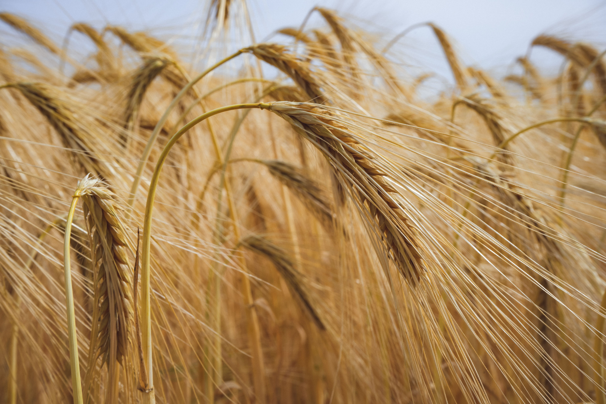
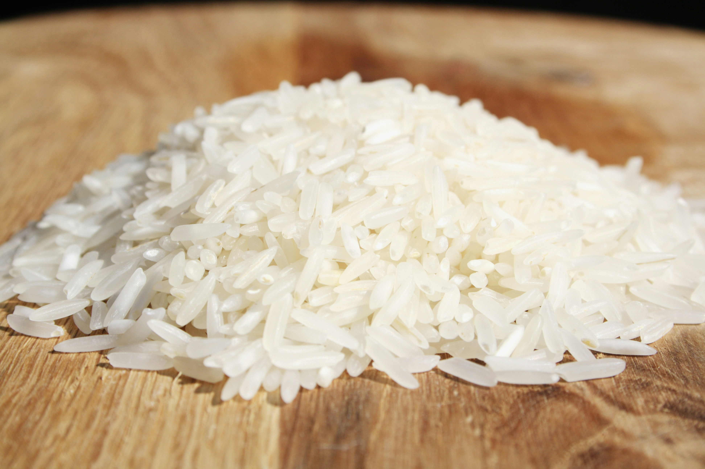
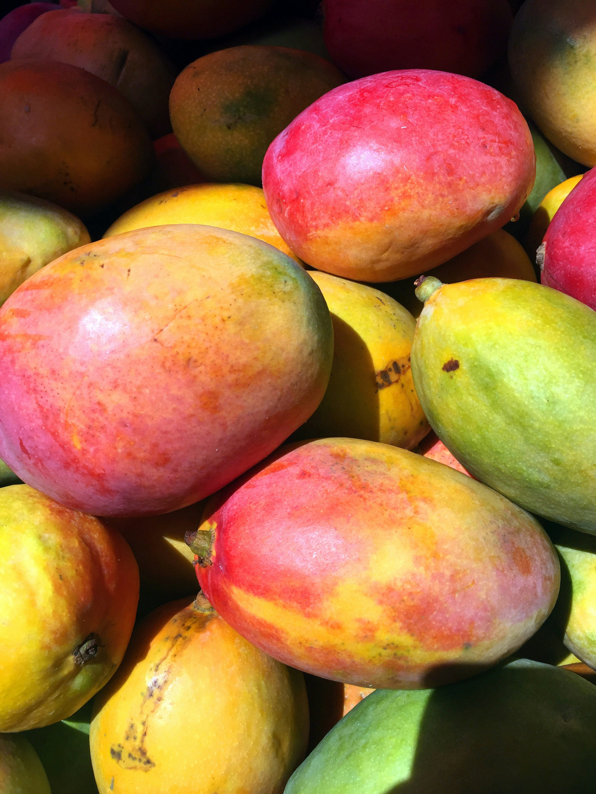
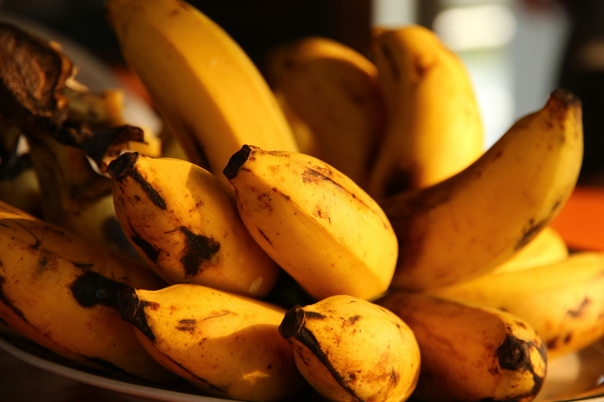
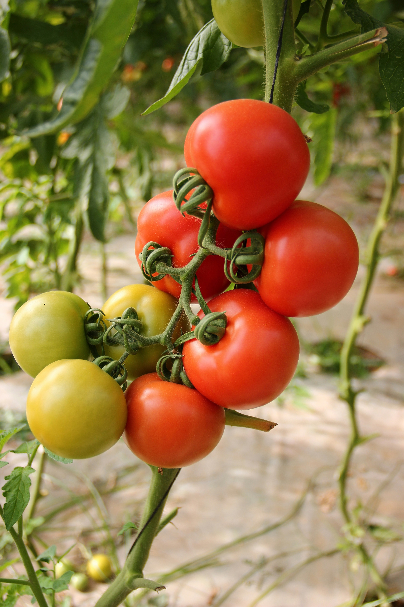
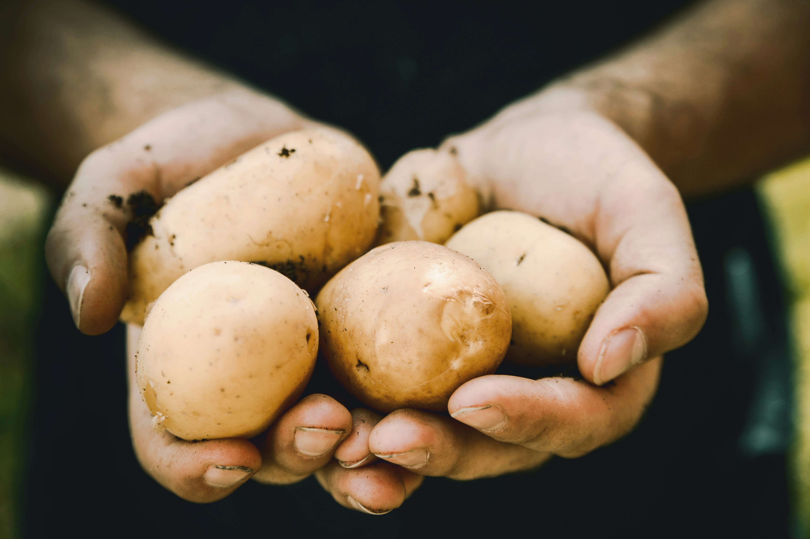
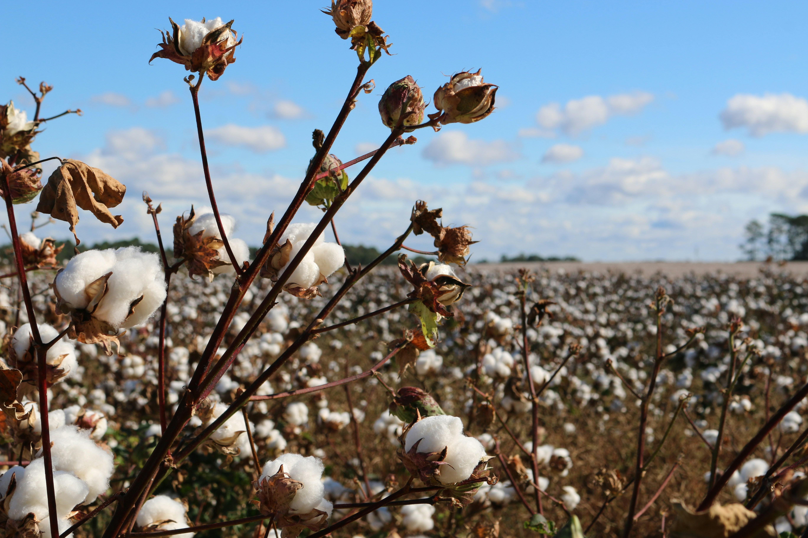
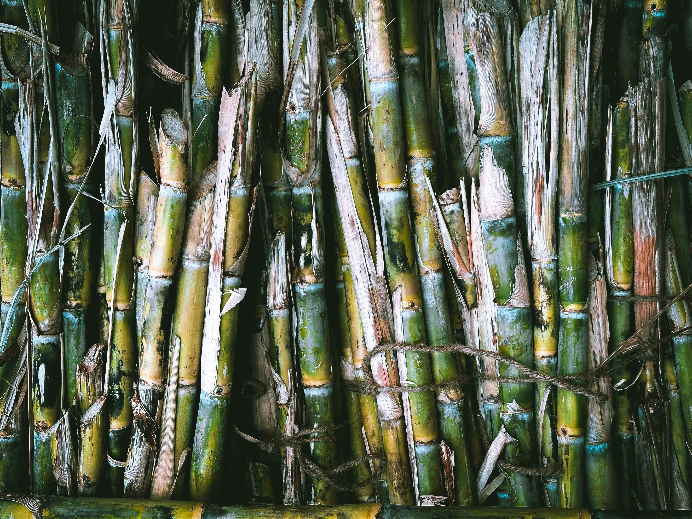

Crop Details
Explore comprehensive information on major crop categories, including varieties, cultivation methods, soil requirements, and harvesting techniques. Click "View Full Profile" on any crop for the complete details.

Wheat
A staple cereal grain grown widely in temperate climates.

Rice
A staple food crop grown in flooded paddies across warm climates.

Mango
A sweet tropical fruit grown on long-lived orchard trees.

Banana
A fast-growing tropical fruit crop harvested year-round.

Tomato
A widely grown vegetable crop valued for its versatility in cooking.

Potato
A starchy root vegetable and one of the world's major food crops.

Cotton
A fiber crop grown commercially for the textile industry.

Sugarcane
A tall tropical grass grown commercially for sugar production.